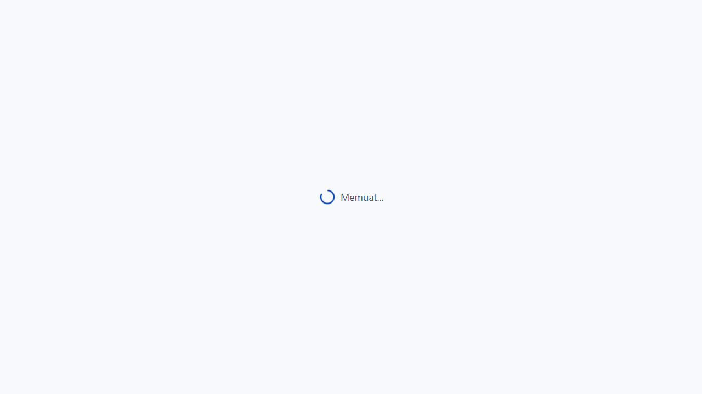
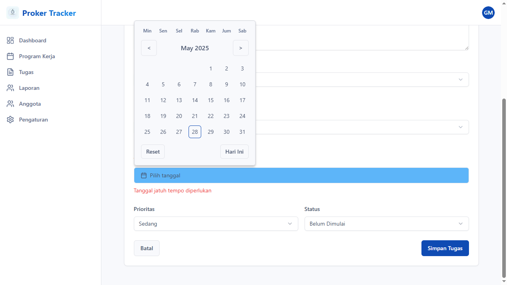
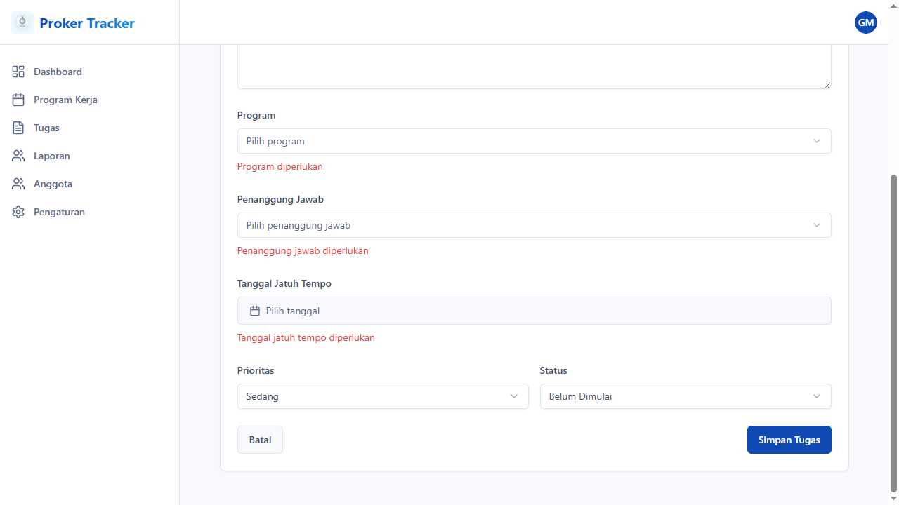

Laporan Pengujian Tambah Program Kerja Proker Tracker
GAGAL
Tanggal & Waktu
2025-05-28 11:32:30
Langkah-langkah Pengujian
Langkah 1: Login terlebih dahulu
Langkah 2: Login berhasil
Langkah 3: Navigasi ke halaman tambah tugas baru
Langkah 4: Navigasi langsung ke halaman tambah tugas
Langkah 5: Mengisi form tambah tugas
Langkah 6: Mengisi Nama Tugas: Tugas Test 211
Langkah 7: Mengisi Deskripsi: Ini adalah deskripsi tugas test 211 yang dibuat secara otomatis oleh pengujian.
Langkah 8: Tidak dapat menemukan dropdown program
Langkah 9: Tombol submit ditemukan dengan selector: button[type='submit']
Langkah 10: Tidak dapat menemukan date picker
Langkah 11: Tidak dapat menemukan dropdown penanggung jawab
Langkah 12: Tidak dapat menemukan tanggal dalam date picker
Langkah 13: Tidak dapat menemukan dropdown prioritas
Langkah 14: Submit form tambah program kerja
Langkah 15: Form berhasil disubmit
Langkah 16: Verifikasi hasil submit
Langkah 17: Pesan error ditemukan: Program diperlukan
Screenshot
Screenshot 1
Screenshot 2

Screenshot 3

Screenshot 4
Screenshot 5
Screenshot 6
Error
Pengujian gagal: Ditemukan pesan error setelah submit